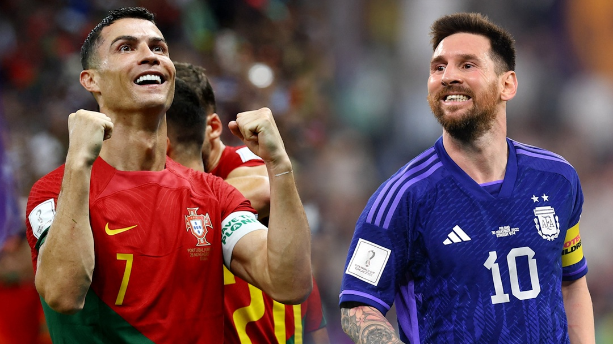

THỂ THAO
Lịch thi đấu và trực tiếp vòng 1/8 World Cup 2022 trên VTV
Anonymous
Rạng sáng nay (3.12), lượt trận cuối cùng vòng bảng khép lại, qua đó xác định đầy đủ 16 đội với 8 cặp đấu ở vòng loại trực tiếp (vòng 1/8) World Cup 2022.
Trận đấu đầu tiên của vòng 1/8 là cuộc chạm trán giữa tuyển Hà Lan (nhất bảng A) gặp tuyển Mỹ (nhì bảng B) lúc 22 giờ hôm nay (3.12) và được trực tiếp trên kênh VTV2, VTV Cần Thơ. Tuyển Hà Lan (hạng 8 thế giới) được đánh giá cao hơn tuyển Mỹ (hạng 16 thế giới) ở cuộc chạm trán này.

Trận đấu thứ hai diễn ra lúc 2 giờ sáng 4.12 là cuộc đối đầu giữa tuyển Argentina (nhất bảng C) với tuyển Úc (nhì bảng D). Trận đấu này được trực tiếp trên VTV3, VTV Cần Thơ. Tuyển Argentina (hạng 3 thế giới) được đánh giá vượt trội tuyển Úc (hạng 38 thế giới).
Trận đấu thứ ba diễn ra lúc 22 giờ ngày 4.12 là cuộc chạm trán giữa đương kim vô địch Pháp (nhất bảng D) gặp tuyển Ba Lan (nhì bảng C). Trận đấu này được trực tiếp trên kênh VTV2, VTV Cần Thơ. Tuyển Pháp (hạng 4 thế giới) được đánh giá cao hơn Ba Lan (hạng 26 thế giới).
Tại World Cup 2022, Ronaldo và Messi là 2 ngôi sao được chờ đợi nhất. Trong kỳ World Cup có thể là cuối cùng với tư cách là cầu thủ, họ được kỳ vọng sẽ dẫn dắt đội tuyển quốc gia của mình chạm đến chiếc cúp vàng danh giá nhất thế giới, để có một cái kết đẹp cho một sự nghiệp lẫy lừng.
Tuyển Bồ Đào Nha của Ronaldo nằm ở bảng H với Uruguay, Hàn Quốc và Ghana. Trong khi đó, tuyển Argentina của Messi lọt vào bảng C cùng Ba Lan, Mexico và Ả Rập Xê Út.
BÌNH LUẬN
HOTLINE
0852161345